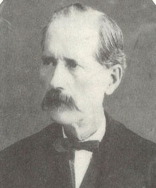
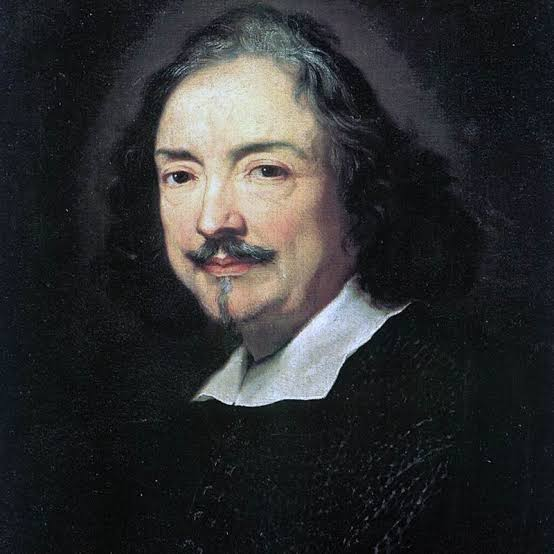

Адольф Сакс
Створив саксофон у 1840-х роках.

Роберт Муг
Створив перший доступний синтезатор — Moog.
Теобальд Бем
Створив сучасну систему клапанів для флейти.

Антоніо де Торрес
Формалізував конструкцію класичної гітари у XIX столітті.
Кирило Деміан
Запатентував акордеон у 1829 році у Відні.
Йоганн Крістіан Деннер
Створив кларнет на початку XVIII століття.

Андреа Аматі
Один із засновників скрипки.
Луї Шпор
Засновник Дерижерської палички